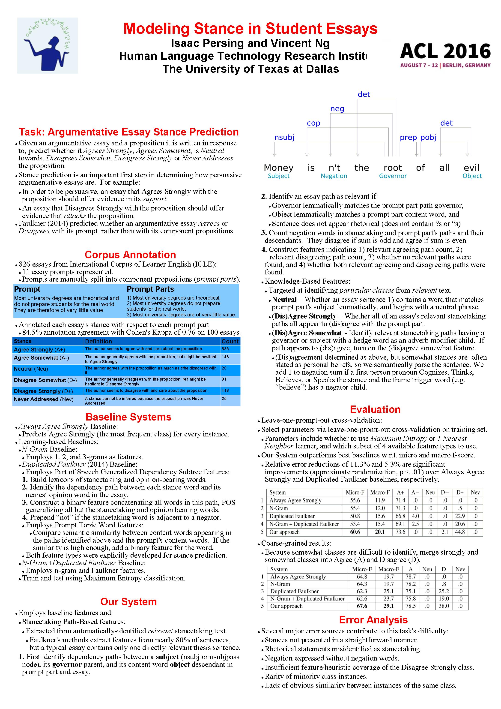

Modeling Stance in Student Essays
Isaac Persing and Vincent Ng.
Proceedings of the 54th Annual Meeting of the Association for Computational Linguistics (Volume 1: Long Papers), pp. 2174--2184, 2016.
Click here for the PostScript or PDF
version.
Abstract
Essay stance classification, the task of determining
how much an essay's author
agrees with a given proposition, is an
important yet under-investigated subtask
in understanding an argumentative essay's
overall content. We introduce a new corpus
of argumentative student essays annotated
with stance information and propose
a computational model for automatically
predicting essay stance. In an evaluation
on 826 essays, our approach significantly
outperforms four baselines, one of
which relies on features previously developed
specifically for stance classification
in student essays, yielding relative error
reductions of at least 11.3% and 5.3%, in
micro and macro F-score, respectively.
Dataset
The human annotation used in this paper is available from
this page.
BibTeX entry
@InProceedings{Persing+Ng:16b,
author = {Isaac Persing and Vincent Ng},
title = {Modeling Stance in Student Essays},
booktitle = {Proceedings of the 54th Annual Meeting of the Association for Computational Linguistics (Volume 1: Long Papers)},
pages = {2174--2184},
year = 2016}
